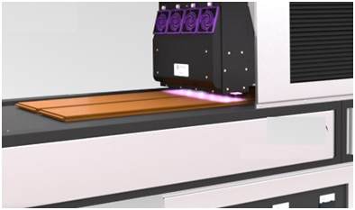
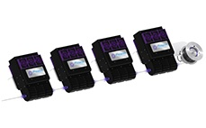
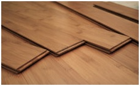
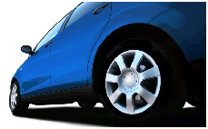
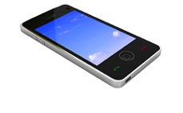

UV COATINGS
UV coating, or ultraviolet coating, is a very glossy, shiny liquid coating applied to a printed paper surface and cured on a printing press or special machine using ultraviolet light. The coating hardens, or cures when it is exposed to the ultra violet radiation. UV coating makes your printed piece eye catching, and is perfect for products such as postcards, hand-out sheets, presentation folders, business cards and catalogs, or any product that can benefit from a rich, glossy and dramatic look. Our high-gloss flood UV coating can even be applied to synthetic paper .
Ultraviolet coating has several advantages over other coating methods such as aqueous coating or varnish. They include:
When UV is used on deep, rich colors, like blues and rich blacks, the result is an almost wet appearance. This can be highly effective with image-rich projects, like product catalogs or photography brochures. The stunning shine it creates is why it is so popular for certain designs and products.
If your printed piece is going to be handed out or travel through the mail, the combination of a visually appealing piece and durability makes UV coating a great effect for postcards, brochures or business cards. The UV coating allows the mailed piece to resist smudging and marking and allows it to maintain a professional, high quality appearance due to an extremely hard finish, one known for being both chemical and abrasion resistant
UV coatings make details pop and stand out and are perfect for photographic images and company logos.
UV coatings are free of solvents and do not emit volatile organic compounds, or VOCs when cured. Paper with UV coatings can be recycled with all of your other paper.
By drying so quickly, the use of UV coating helps reduce production time, enabling earlier shipping and delivery times.
UV LED Coating:
UV LED curing solutions are being utilized in the coating industry because they offer lower operating costs, enhanced system capabilities due to being a solid-state device, and environmental benefits of safer workplace environment and no hazardous materials. UV LED technology drastically reduces energy consumption and significantly reduces work-piece surface temperature. Machines can be made more compact due to small form factor; speed can be increased due to consistent UV output; and the diffuse nature of UV LED light can be used to more effectively cure shaped surfaces which previously required multiple lamps at various angles. UV curable coating applications include: wood and vinyl, automotive, musical instruments, fixtures and many others.
UV Curing Applications:
 Wood
UV LED curing technology is utilized in the wood coatings industry for applications such as edge coating, roller coating and digital printing. UV LED technology drastically reduces energy consumption and significantly reduces work-piece surface temperature.
Automotive
UV curing has been used for years in several areas of the automotive production process. UV provides near-instant curing of functional and decorative coatings. And the lightweight materials used in today’s automobiles benefit from the low temperatures enabled by UV LED technology.
Industrial
Countless manufacturing processes make use of the benefits of UV curing. Applications range from manual curing of the adhesives used during sub-component assembly, to high speed curing of coatings and colorings of the finished products.